Pancasila -Indonesia-
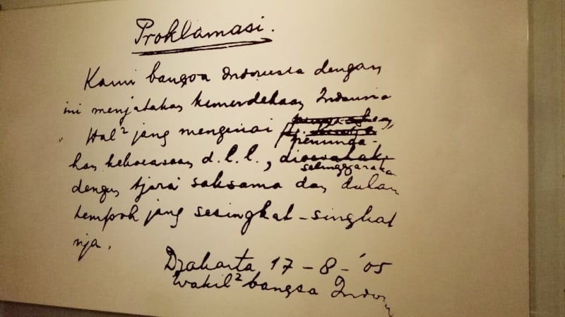Teks Proklamasi -Jakarta-
.jpg)
Perundingan linggarjati
-Jawa barat-

Perundingan renville -Jakarta-
.jpg)
Perundingan roem-royem
-Jakarta-
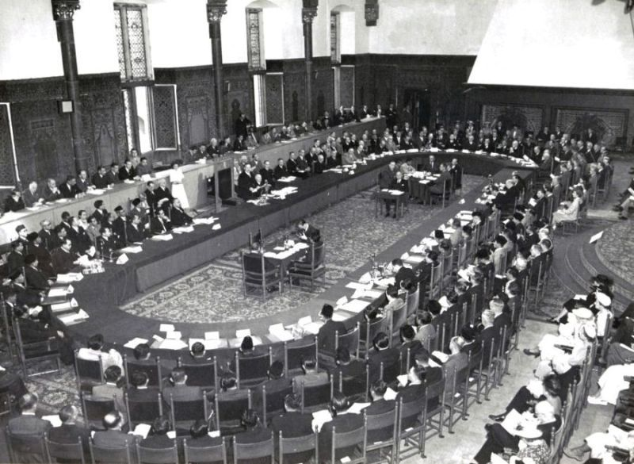
Konferensi Meja bundar
-Den haag-
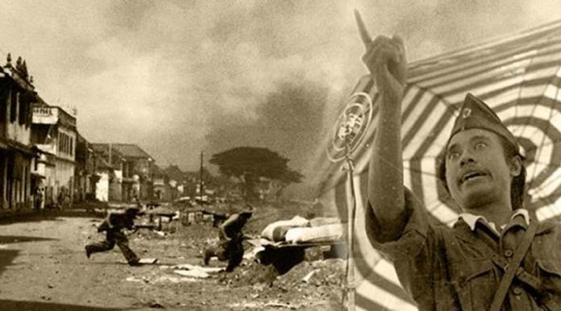
Pertempuran 10 november
-Surabaya-

Pembentukan BPUPKI dan PPKI
-Volksraad,Jakarta-

Peristiwa rengasdengklok
-Jakarta-
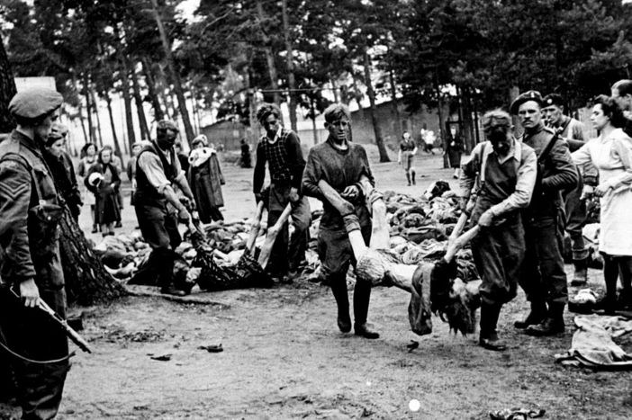
Peristiwa G30S PKI -Jakarta-
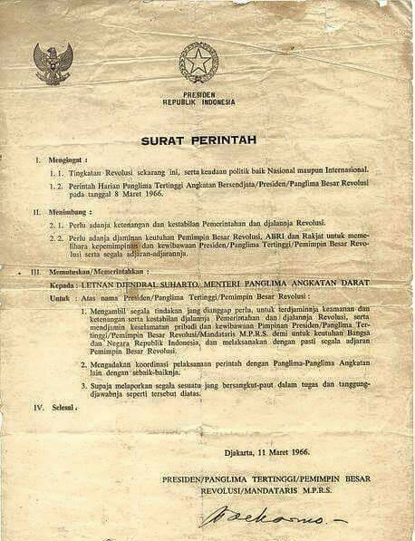Surat perintah Supersemar
-Jakarta, 13 Maret-
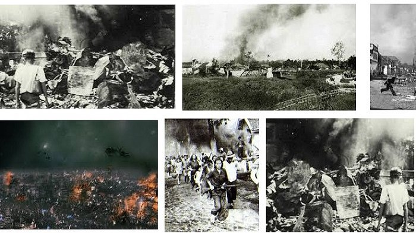
Peristiwa Bandung lautan api
-Bandung, 24 Maret-

Berdirinya organ.Budi utomo
-Yogyakarta, 20 Mei-
Peristiwa trisakti
-Jakarta, 12 Mei-
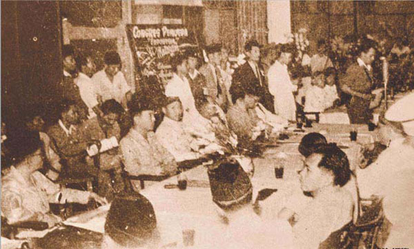
Kongres Sumpah pemuda
-Jakarta 1926-

Dekrit presiden
-Jakarta 1959-
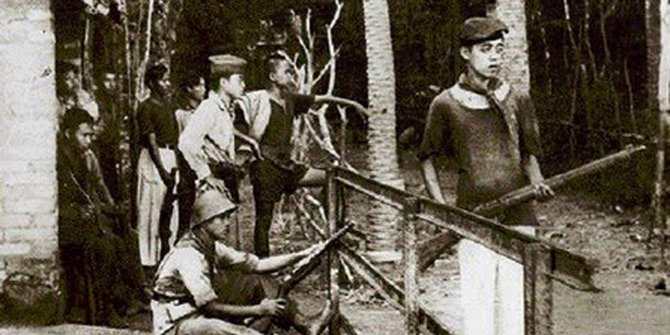
Perang tando (Minahasa)
-Sulawesi utara-
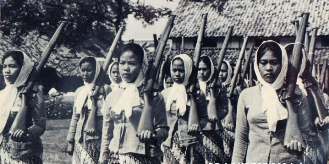
Srikandi bersenjata -Doc.id-
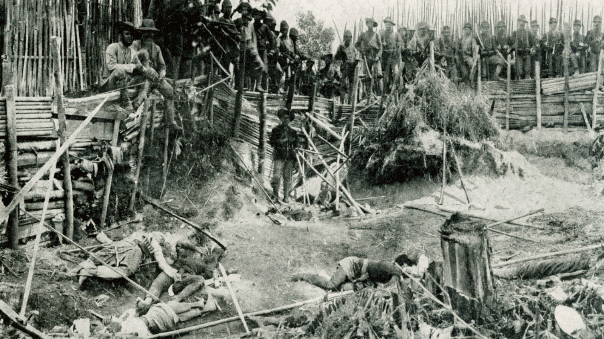Peperangan Aceh -Doc.id-
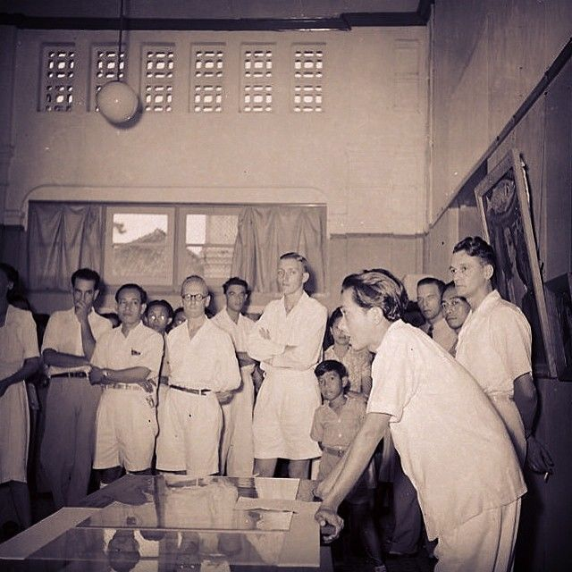Chairil Anwar -Jakarta-

Peperangan Ambarawa -Medan.Doc.id-
Sejarah Indonesia
Sejarah Indonesia meliputi suatu rentang waktu yang sangat panjang yang dimulai sejak zaman prasejarah berdasarkan penemuan "Manusia Jawa" yang berusia 1,7 juta tahun yang lalu. Periode sejarah Indonesia dapat dibagi menjadi lima era: Era Prakolonial, munculnya kerajaan-kerajaan Hindu-Buddha serta Islam di Jawa dan Sumatera yang terutama mengandalkan perdagangan; Era Kolonial, masuknya orang-orang Eropa (terutama Belanda dan Portugis) yang menginginkan rempah-rempah mengakibatkan penjajahan oleh Belanda selama sekitar 3,5 abad antara awal abad ke-17 hingga pertengahan abad ke-20; Era Kemerdekaan Awal, pasca-Proklamasi Kemerdekaan Indonesia (1945) sampai jatuhnya Soekarno (1966); Era Orde Baru, 32 tahun masa pemerintahan Soeharto (1966–1998); serta Orde Reformasi yang berlangsung sampai sekarang.
Prasejarah
Secara geologi, wilayah Indonesia modern (untuk kemudahan, selanjutnya disebut Nusantara) merupakan pertemuan antara tiga lempeng benua utama: Lempeng Eurasia, Lempeng Indo-Australia, dan Lempeng Pasifik (lihat artikel Geologi Indonesia). Kepulauan Indonesia seperti yang ada saat ini terbentuk pada saat melelehnya es setelah berakhirnya Zaman Es, sekitar 10.000 tahun yang lalu. Pada masa Pleistosen, ketika masih terhubung dengan Asia Daratan, masuklah pemukim pertama. Bukti pertama yang menunjukkan penghuni awal adalah fosil-fosil Homo erectus manusia Jawa dari masa 2 juta hingga 500.000 tahun lalu. Penemuan sisa-sisa "manusia Flores" (Homo floresiensis)[1] di Liang Bua, Flores, membuka kemungkinan masih bertahannya H. erectus hingga masa Zaman Es terakhir.[2] Homo sapiens pertama diperkirakan masuk ke Nusantara sejak 100.000 tahun yang lalu melewati jalur pantai Asia dari Asia Barat, dan pada sekitar 60 000 sampai 70 000 tahun yang lalu telah mencapai Pulau Papua dan Australia.[3] Mereka, yang berfenotipe kulit gelap dan rambut ikal rapat, menjadi nenek moyang penduduk asli Melanesia (termasuk Papua) sekarang dan membawa kultur kapak lonjong (Paleolitikum). Gelombang pendatang berbahasa Austronesia dengan kultur Neolitikum datang secara bergelombang sejak 3000 SM dari Cina Selatan melalui Formosa dan Filipina membawa kultur beliung persegi (kebudayaan Dongson). Proses migrasi ini merupakan bagian dari pendudukan Pasifik. Kedatangan gelombang penduduk berciri Mongoloid ini cenderung ke arah barat, mendesak penduduk awal ke arah timur atau berkawin campur dengan penduduk setempat dan menjadi ciri fisik penduduk Maluku serta Nusa Tenggara. Pendatang ini membawa serta teknik-teknik pertanian, termasuk bercocok tanam padi di sawah (bukti paling lambat sejak abad ke-8 SM), beternak kerbau, pengolahan perunggu dan besi, teknik tenun ikat, praktik-praktik megalitikum, serta pemujaan roh-roh (animisme) serta benda-benda keramat (dinamisme). Pada abad pertama SM sudah terbentuk permukiman-permukiman serta kerajaan-kerajaan kecil, dan sangat mungkin sudah masuk pengaruh kepercayaan dari India akibat hubungan perniagaan.

Era pra-kolonial
Sejarah awal Para cendekiawan India telah menulis tentang Dwipantara atau kerajaan Hindu Jawa Dwipa di pulau Jawa dan Sumatra atau Swarna dwipa sekitar 200 SM. Bukti fisik awal yang menyebutkan mengenai adanya dua kerajaan bercorak Hinduisme pada abad ke-5, yaitu: Kerajaan Tarumanagara yang menguasai Jawa Barat dan Kerajaan Kutai di pesisir Sungai Mahakam, Kalimantan. Pada tahun 425 agama Buddha telah mencapai wilayah tersebut. Di saat Eropa memasuki masa Renaisans, Nusantara telah mempunyai warisan peradaban berusia ribuan tahun dengan dua kerajaan besar yaitu Sriwijaya di Sumatra dan Majapahit di Jawa, ditambah dengan puluhan kerajaan kecil yang sering kali menjadi vazal tetangganya yang lebih kuat atau saling terhubung dalam semacam ikatan perdagangan (seperti di Maluku).
Kerajaan Hindu-Buddha
Pada abad ke-4 hingga abad ke-7 di wilayah Jawa Barat terdapat kerajaan bercorak Hindu-Budha yaitu kerajaan Tarumanagara yang dilanjutkan dengan Kerajaan Sunda sampai abad ke-16. Pada masa abad ke-7 hingga abad ke-14, kerajaan Buddha Sriwijaya berkembang pesat di Sumatra. Penjelajah Tiongkok I Ching mengunjungi ibukotanya Palembang sekitar tahun 670. Pada puncak kejayaannya, Sriwijaya menguasai daerah sejauh Jawa Barat dan Semenanjung Melayu. Abad ke-14 juga menjadi saksi bangkitnya sebuah kerajaan Hindu di Jawa Timur, Majapahit. Patih Majapahit antara tahun 1331 hingga 1364, Gajah Mada berhasil memperoleh kekuasaan atas wilayah yang kini sebagian besarnya adalah Indonesia beserta hampir seluruh Semenanjung Melayu. Warisan dari masa Gajah Mada termasuk kodifikasi hukum dan dalam kebudayaan Jawa, seperti yang terlihat dalam wiracarita Ramayana.
Kerajaan Islam
Islam sebagai sebuah pemerintahan hadir di Indonesia sekitar abad ke-12, namun sebenarnya Islam sudah sudah masuk ke Indonesia pada abad 7 Masehi. Saat itu sudah ada jalur pelayaran yang ramai dan bersifat internasional melalui Selat Malaka yang menghubungkan Dinasti Tang di Cina, Sriwijaya di Asia Tenggara dan Bani Umayyah di Asia Barat sejak abad 7.[4] Menurut sumber-sumber Cina menjelang akhir perempatan ketiga abad 7, seorang pedagang Arab menjadi pemimpin permukiman Arab muslim di pesisir pantai Sumatera. Islam pun memberikan pengaruh kepada institusi politik yang ada. Hal ini tampak pada Tahun 100 H (718 M) Raja Sriwijaya Jambi yang bernama Srindravarman mengirim surat kepada Khalifah Umar bin Abdul Aziz dari Kekhalifahan Bani Umayyah meminta dikirimkan da'i yang bisa menjelaskan Islam kepadanya. Surat itu berbunyi: “Dari Raja di Raja yang adalah keturunan seribu raja, yang isterinya juga cucu seribu raja, yang di dalam kandang binatangnya terdapat seribu gajah, yang di wilayahnya terdapat dua sungai yang mengairi pohon gaharu, bumbu-bumbu wewangian, pala dan kapur barus yang semerbak wanginya hingga menjangkau jarak 12 mil, kepada Raja Arab yang tidak menyekutukan tuhan-tuhan lain dengan Allah. Saya telah mengirimkan kepada anda hadiah, yang sebenarnya merupakan hadiah yang tak begitu banyak, tetapi sekadar tanda persahabatan. Saya ingin Anda mengirimkan kepada saya seseorang yang dapat mengajarkan Islam kepada saya dan menjelaskan kepada saya tentang hukum-hukumnya.” Dua tahun kemudian, yakni tahun 720 M, Raja Srindravarman, yang semula Hindu, masuk Islam. Sriwijaya Jambi pun dikenal dengan nama 'Sribuza Islam'. Sayang, pada tahun 730 M Sriwijaya Jambi ditawan oleh Sriwijaya Palembang yang masih menganut Budha.[5] Islam terus mengokoh menjadi institusi politik yang mengemban Islam. Misalnya, sebuah kesultanan Islam bernama Kesultanan Peureulak didirikan pada 1 Muharram 225 H atau 12 November 839 M. Contoh lain adalah Kerajaan Ternate. Islam masuk ke kerajaan di kepulauan Maluku ini tahun 1440. Rajanya seorang Muslim bernama Bayanullah. Kesultanan Islam kemudian semikin menyebarkan ajaran-ajarannya ke penduduk dan melalui pembauran, menggantikan Hindu sebagai kepercayaan utama pada akhir abad ke-16 di Jawa dan Sumatera. Hanya Bali yang tetap mempertahankan mayoritas Hindu. Di kepulauan-kepulauan di timur, rohaniawan-rohaniawan Kristen dan Islam diketahui sudah aktif pada abad ke-16 dan 17, dan saat ini ada mayoritas yang besar dari kedua agama di kepulauan-kepulauan tersebut. Penyebaran Islam dilakukan melalui hubungan perdagangan di luar Nusantara; hal ini, karena para penyebar dakwah atau mubaligh merupakan utusan dari pemerintahan Islam yang datang dari luar Indonesia, maka untuk menghidupi diri dan keluarga mereka, para mubaligh ini bekerja melalui cara berdagang, para mubaligh inipun menyebarkan Islam kepada para pedagang dari penduduk asli, hingga para pedagang ini memeluk Islam dan meyebarkan pula ke penduduk lainnya, karena umumnya pedagang dan ahli kerajaan lah yang pertama mengadopsi agama baru tersebut. Kerajaan Islam penting termasuk di antaranya: Kerajaan Samudera Pasai, Kesultanan Banten yang menjalin hubungan diplomatik dengan negara-negara Eropa, Kerajaan Mataram, Kerajaan Iha, Kesultanan Ternate dan Kesultanan Tidore di Maluku.
Era kolonial
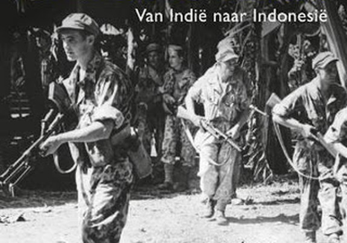Kolonisasi Portugis dan Spanyol Alfonso(kadang juga ditulis Alfonso) de Albuquerque. Karena tokoh inilah, yang membuat kawasan Nusantara waktu itu dikenal oleh orang Eropa dan dimulainya Kolonisasi berabad-abad oleh Portugis bersama bangsa Eropa lain, terutama Inggris dan Belanda. Dari Sungai Tejo yang bermuara ke Samudra Atlantik itulah armada Portugis mengarungi Samudra Atlantik, yang mungkin memakan waktu sebulan hingga tiga bulan, melewati Tanjung Harapan Afrika, menuju Selat Malaka. Dari sini penjelajahan dilanjutkan ke Kepulauan Maluku untuk mencari rempah-rempah, komoditas yang setara emas kala itu. ”Pada abad 16 saat petualangan itu dimulai biasanya para pelaut negeri Katolik itu diberkati oleh pastor dan raja sebelum berlayar melalui Sungai Tagus,” kata Teresa. Biara St Jeronimus atau Biara Dos Jeronimos dalam bahasa Portugis itu didirikan oleh Raja Manuel pada tahun 1502 di tempat saat Vasco da Gama memulai petualangan ke timur. Museum Maritim atau orang Portugis menyebut Museu de Marinha itu didirikan oleh Raja Luis pada 22 Juli 1863 untuk menghormati sejarah maritim Portugis. Selain patung di taman, lukisan Afonso de Albuquerque juga menjadi koleksi museum itu. Di bawah lukisan itu tertulis, ”Gubernur India 1509-1515. Peletak dasar Kerajaan Portugis di India yang berbasis di Ormuz, Goa, dan Malaka. Pionir kebijakan kekuatan laut sebagai kekuatan sentral kerajaan”. Berbagai barang perdagangan Portugis juga dipamerkan di museum itu, bahkan gundukan lada atau merica. Ada sejumlah motivasi mengapa Kerajaan Portugis memulai petualangan ke timur. Ahli sejarah dan arkeologi Islam Uka Tjandrasasmita dalam buku Indonesia-Portugal: Five Hundred Years of Historical Relationship (Cepesa, 2002), mengutip sejumlah ahli sejarah, menyebutkan tidak hanya ada satu motivasi Kerajaan Portugis datang ke Asia. Ekspansi itu mungkin dapat diringkas dalam tiga kata bahasa Portugis, yakni feitoria, fortaleza, dan igreja. Arti harfiahnya adalah emas, kejayaan, dan gereja atau perdagangan, dominasi militer, dan penyebaran agama Katolik. Menurut Uka, Albuquerque, Gubernur Portugis Kedua dari Estado da India, Kerajaan Portugis di Asia, merupakan arsitek utama ekspansi Portugis ke Asia. Dari Goa, ia memimpin langsung ekspedisi ke Malaka dan tiba di sana awal Juli 1511 membawa 15 kapal besar dan kecil serta 600 tentara. Ia dan pasukannya mengalahkan Malaka 10 Agustus 1511. Sejak itu Portugis menguasai perdagangan rempah-rempah dari Asia ke Eropa. Setelah menguasai Malaka, ekspedisi Portugis yang dipimpin Antonio de Abreu mencapai Maluku, pusat rempah-rempah.
Periode Kejayaan Portugis di Nusantara
Periode 1511-1526, selama 15 tahun, Nusantara menjadi pelabuhan maritim penting bagi Kerajaan Portugis, yang secara reguler menjadi rute maritim untuk menuju Pulau Sumatera, Jawa, Banda, dan Maluku. Pada tahun 1511 Portugis mengalahkan Kerajaan Malaka. Pada tahun 1512 Portugis menjalin komunikasi dengan Kerajaan Sunda untuk menandatangani perjanjian dagang, terutama lada. Perjanjian dagang tersebut kemudian diwujudkan pada tanggal 21 Agustus 1522 dalam bentuk dokumen kontrak yang dibuat rangkap dua, satu salinan untuk raja Sunda dan satu lagi untuk raja Portugal. Pada hari yang sama dibangun sebuah prasasti yang disebut Prasasti Perjanjian Sunda-Portugal di suatu tempat yang saat ini menjadi sudut Jalan Cengkeh dan Jalan Kali Besar Timur I, Jakarta Barat. Dengan perjanjian ini maka Portugis dibolehkan membangun gudang atau benteng di Sunda Kelapa. Pada tahun 1512 juga Afonso de Albuquerque mengirim Antonio Albreu dan Franscisco Serrao untuk memimpin armadanya mencari jalan ke tempat asal rempah-rempah di Maluku. Sepanjang perjalanan, mereka singgah di Madura, Bali, dan Lombok. Dengan menggunakan nakhoda-nakhoda Jawa, armada itu tiba di Kepulauan Banda, terus menuju Maluku Utara hingga tiba di Ternate. Kehadiran Portugis di perairan dan kepulauan Indonesia itu telah meninggalkan jejak-jejak sejarah yang sampai hari ini masih dipertahankan oleh komunitas lokal di Nusantara, khususnya flores, Solor dan Maluku, di Jakarta Kampong Tugu yang terletak di bagian Utara Jakarta, antara Kali Cakung, pantai Cilincing dan tanah Marunda. Bangsa Eropa pertama yang menemukan Maluku adalah Portugis, pada tahun 1512. Pada waktu itu 2 armada Portugis, masing-masing di bawah pimpinan Anthony d'Abreu dan Fransisco Serau, mendarat di Kepulauan Banda dan Kepulauan Penyu. Setelah mereka menjalin persahabatan dengan penduduk dan raja-raja setempat - seperti dengan Kerajaan Ternate di pulau Ternate, Portugis diberi izin untuk mendirikan benteng di Pikaoli, begitupula Negeri Hitu lama, dan Mamala di Pulau Ambon.Namun hubungan dagang rempah-rempah ini tidak berlangsung lama, karena Portugis menerapkan sistem monopoli sekaligus melakukan penyebaran agama Kristen. Salah seorang misionaris terkenal adalah Fransiskus Xaverius. Tiba di Ambon 14 Februari 1546, kemudian melanjutkan perjalanan ke Ternate, tiba pada tahun 1547, dan tanpa kenal lelah melakukan kunjungan ke pulau-pulau di Kepulauan Maluku untuk melakukan penyebaran agama. Persahabatan Portugis dan Ternate berakhir pada tahun 1570. Peperangan dengan Sultan Babullah selama 5 tahun (1570-1575), membuat Portugis harus angkat kaki dari Ternate dan terusir ke Tidore dan Ambon. Perlawanan rakyat Maluku terhadap Portugis, dimanfaatkan Belanda untuk menjejakkan kakinya di Maluku. Pada tahun 1605, Belanda berhasil memaksa Portugis untuk menyerahkan pertahanannya di Ambon kepada Steven van der Hagen dan di Tidore kepada Cornelisz Sebastiansz. Demikian pula benteng Inggris di Kambelo, Pulau Seram, dihancurkan oleh Belanda. Sejak saat itu Belanda berhasil menguasai sebagian besar wilayah Maluku. Kedudukan Belanda di Maluku semakin kuat dengan berdirinya VOC pada tahun 1602, dan sejak saat itu Belanda menjadi penguasa tunggal di Maluku. Di bawah kepemimpinan Jan Pieterszoon Coen, Kepala Operasional VOC, perdagangan cengkih di Maluku sepunuh di bawah kendali VOC selama hampir 350 tahun. Untuk keperluan ini VOC tidak segan-segan mengusir pesaingnya; Portugis, Spanyol, dan Inggris. Bahkan puluhan ribu orang Maluku menjadi korban kebrutalan VOC. kemudian mereka membangun benteng di Ternate tahun 1511, kemudian tahun 1512 membangun Benteng di Amurang Sulawesi Utara. Portugis kalah perang dengan Spanyol maka daerah Sulawesi Utara diserahkan dalam kekuasaan Spanyol (1560 hingga 1660). Kerajaan Portugis kemudian dipersatukan dengan Kerajaan Spanyol. (Baca buku :Sejarah Kolonial Portugis di Indonesia, oleh David DS Lumoindong). Abad 17 datang armada dagang VOC (Belanda) yang kemudian berhasil mengusir Portugis dari Ternate, sehingga kemudian Portugis mundur dan menguasai Timor timur (sejak 1515). Kolonialisme dan Imperialisme mulai merebak di Indonesia sekitar abad ke-15, yaitu diawali dengan pendaratan bangsa Portugis di Malaka dan bangsa Belanda yang dipimpin Cornellis de Houtman pada tahun 1596, untuk mencari sumber rempah-rempah dan berdagang.
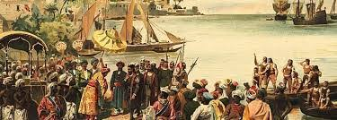Perlawanan Rakyat terhadap Portugis
Kedatangan bangsa Portugis ke Semenanjung Malaka dan ke Kepulauan Maluku merupakan perintah dari negaranya untuk berdagang. Perlawanan yang di lakukan antara lain:
- Perlawanan Rakyat Minahasa terhadap Portugis
- Perlawanan Rakyat Malaka terhadap Portugis
- Perlawanan rakyat Aceh terhadap Portugis
- Perlawanan Rakyat Maluku terhadap Portugis
Perjuangan perlawanan Rakyat Perserikatan Minahasa melawan Portugis telah berlangsung dari tahun 1512-1560, dengan gabungan perserikatan suku-suku di Minahasa maka mereka dapat mengusir Portugis. Portugis membangun beberapa Benteng pertahanan di Minahasa di antaranya di Amurang dan Kema.
Pada tahun 1511, armada Portugis yang dipimpin oleh Albuquerque menyerang Kerajaan Malaka. Usaha perlawanan kolonial Portugis di Malaka yang terjadi pada tahun 1513 mengalami kegagalan karena kekuatan dan persenjataan Portugis lebih kuat. Pada tahun 1527, armada Demak di bawah pimpinan Fatahillah/Falatehan dapat menguasai Banten,Sunda Kelapa, dan Cirebon. Armada Portugis dapat dihancurkan oleh Fatahillah/Falatehan dan ia kemudian mengganti nama Sunda Kelapa menjadi Jayakarta yang artinya kemenangan besar, yang kemudian menjadi Jakarta.
Mulai tahun 1554 hingga tahun 1555, upaya Portugis tersebut gagal karena Portugis mendapat perlawanan keras dari rakyat Aceh. Pada saat Sultan Iskandar Muda berkuasa, Kerajaan Aceh pernah menyerang Portugis di Malaka pada tahun 1615 dan 1629.
Bangsa Portugis pertama kali mendarat di Maluku pada tahun 1511. Kedatangan Portugis berikutnya pada tahun 1513. Akan tetapi, Ternate merasa dirugikan oleh Portugis karena keserakahannya dalam memperoleh keuntungan melalui usaha monopoli perdagangan rempah-rempah. Pada tahun 1533, Sultan Ternate menyerukan kepada seluruh rakyat Maluku untuk mengusir Portugis di Maluku. Pada tahun 1570, rakyat Ternate yang dipimpin oleh Sultan Hairun dapat kembali melakukan perlawanan terhadap bangsa Portugis, namun dapat diperdaya oleh Portugis hingga akhirnya tewas terbunuh di dalam Benteng Duurstede. Selanjutnya dipimpin oleh Sultan Baabullah pada tahun 1574. Portugis diusir yang kemudian bermukim di Pulau Timor.
Garis waktu kolonialisasi
Kolonialisasi Spanyol
- 1521 Spanyol mendarat di Sulawesi Utara
- 1560 Spanyol mendirikan pos di Manado.
- 1617 Gerakan perlawanan rakyat Minahasa di Sulawesi Utara untuk mengusir kolonial Spanyol.
- 1646 Spanyol di usir dari Minahasa dan Sulawesi Utara. Tahun selanjutnya Spanyol masih mencoba memengaruhi kerajaan sekitar untuk merebut kembali Minahasa tapi gagal, terakhir dengan mendukung Bolaang Mongondow yang berakhir tahun 1692.
Kolonialisasi Portugis
1509 - 1520
- 1509 Portugis tiba pertama kali di Melaka.
- 1511 April, Admiral Portugis Alfonso de Albuquerque memutuskan berlayar dari Goa ke Melaka.
- 10 Agustus, Pasukan Albuquerque menguasai Melaka.
- Sultan Melaka melarikan diri ke Riau.
- Portugis di Melaka menghancurkan armada Jawa. Kapal mereka karam dengan seluruh hartanya dalam perjalanan kembali ke Goa.
- Pati Unus menaklukkan Jepara
- Desember, Albuquerque mengirim tiga kapal di bawah Antonio de Abreu dari Melaka untuk menjelajah ke arah Timur dll.
Kolonisasi VOC
Mulai tahun 1602 Belanda secara perlahan-lahan menjadi penguasa wilayah yang kini adalah Indonesia, dengan memanfaatkan perpecahan di antara kerajaan-kerajaan kecil yang telah menggantikan Majapahit. Satu-satunya yang tidak terpengaruh adalah Timor Portugis, yang tetap dikuasai Portugal hingga 1975 ketika berintegrasi menjadi provinsi Indonesia bernama Timor Timur. Belanda menguasai Indonesia selama hampir 350 tahun (antara 1602 dan 1945), kecuali untuk suatu masa pendek di mana sebagian kecil dari Indonesia dikuasai Britania setelah Perang Jawa Britania-Belanda dan masa penjajahan Jepang pada masa Perang Dunia II. Sewaktu menjajah Indonesia, Belanda mengembangkan Hindia Belanda menjadi salah satu kekuasaan kolonial terkaya di dunia. 350 tahun penjajahan Belanda bagi sebagian orang adalah mitos belaka karena wilayah Aceh baru ditaklukkan kemudian setelah Belanda mendekati kebangkrutannya. Pada abad ke-17 dan 18 Hindia Belanda tidak dikuasai secara langsung oleh pemerintah Belanda namun oleh perusahaan dagang bernama Perusahaan Hindia Timur Belanda (bahasa Belanda: Verenigde Oostindische Compagnie atau VOC). VOC telah diberikan hak monopoli terhadap perdagangan dan aktivitas kolonial di wilayah tersebut oleh Parlemen Belanda pada tahun 1602. Markasnya berada di Batavia, yang kini bernama Jakarta. Tujuan utama VOC adalah mempertahankan monopolinya terhadap perdagangan rempah-rempah di Nusantara. Hal ini dilakukan melalui penggunaan dan ancaman kekerasan terhadap penduduk di kepulauan-kepulauan penghasil rempah-rempah, dan terhadap orang-orang non-Belanda yang mencoba berdagang dengan para penduduk tersebut. Contohnya, ketika penduduk Kepulauan Banda terus menjual biji pala kepada pedagang Inggris, pasukan Belanda membunuh atau mendeportasi hampir seluruh populasi dan kemudian mempopulasikan pulau-pulau tersebut dengan pembantu-pembantu atau budak-budak yang bekerja di perkebunan pala. VOC menjadi terlibat dalam politik internal Jawa pada masa ini, dan bertempur dalam beberapa peperangan yang melibatkan pemimpin Mataram dan Banten.
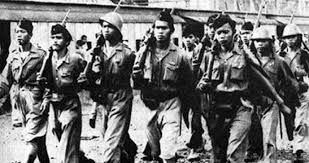